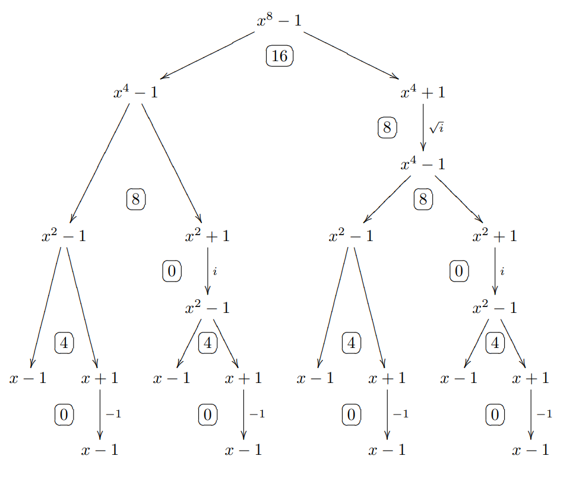

FFT & NTT 学习笔记
目录
以下是我对 FFT 的感性理解，可能并不严谨，如有错误欢迎指正。
FFT
以下讲述的算法是 Cooley–Tukey FFT，它在算法竞赛中使用的更为广泛。
前置知识：复数，需要理解 Euler 公式。
多项式乘法
对于 $n$ 次多项式
$$ \begin{aligned} f(x) = \sum_{i=0}^n f_ix^i &= f_0 + f_1 x + f_2x^2 + \cdots + g_nx^n \\ g(x) = \sum_{i=0}^n g_ix^i &= g_0 + g_1 x + g_2x^2 + \cdots + g_nx^n \end{aligned} $$
它们的卷积是 $F(x) = f(x) \ast g(x) = (f \ast g)(x) = \sum\limits_{k=0}^{2n} c_kx^k$ ，其中
$$ c_k = \sum_{i+j=k}f_ig_j $$
因此朴素的计算多项式的卷积需要 $n^2$ 次系数乘法，我们需要优化。
点值表示法
$n$ 次多项式 $f(x)$ 可以由 $n+1$ 个系数决定，也可以由 $n+1$ 个座标（点值）决定。即 $n$ 次多项式可以看作 $n+1$ 维的向量。
考虑选取 $2n+1$ 个座标来确定 $f(x)$ 和 $g(x)$ 。则 $F(x)$ 可以简单的通过做 $2n+1$ 次乘法得到
$$ (x_k,F(x_k)) = \left(x_k, f(x_k)g(x_k)\right) $$
现在我们有了新的思路：先从系数表示法转换为点值表示法，做完乘法后再变回去。
DFT
怎么把多项式转换成点值呢？我们有离散 Fourier 变换。
称方程 $x^n = 1$ 的 $n$ 个解为单位根 $\zeta_n$ 。对于给定的多项式 $f(x) = \sum\limits_{k=0}^{n-1} f_kx^k$ 和一个单位根 $\zeta_n$ ，称向量
$$ \operatorname{DFT}_{\zeta_n}(f) =( f(1), f(\zeta_n^1), \cdots, f(\zeta_n^{n-1}) ) $$
为 $f$ 的离散 Fourier 变换（Discrete Fourier Transform）。
DFT 存在逆变换（IDFT），即从点值重新变回系数，仍是从向量到向量的变换。
IDFT 具有一个关键性质
$$ (\operatorname{DFT}_{\zeta})^{-1} = \frac{1}{n} (\operatorname{DFT}_{{\zeta}^{-1}}) \tag{1} $$
我们将在后文证明它。现在我们可以统一的处理 DFT 和 IDFT。
为了方便描述，接下来我们将把 $\operatorname{DFT}_{\zeta_n}$ 简单的记作 $\mathcal{F}_n$ 。
单位原根
至此，我们计算 DFT 的复杂度仍然是 $O(n^2)$ ，FFT 所迈出的关键一步是选取特殊的点加速计算。
单位根中特殊的一个记作 $\zeta_n = e^{\frac{2 \pi i}{n}}$ ，它叫做单位原根。依 Euler 公式，有
$$ \zeta_n = e^{\tfrac{2 \pi i}{n}} = \cos \left(\frac{2\pi}{n}\right) + i \sin \left(\frac{2\pi}{n}\right) $$
即 $\zeta_n$ 是单位圆上的一个点，全部的 $n$ 个单位根
$$ x_k = \zeta_n^k = e^{k\tfrac{2 \pi i}{n}} = \cos \left(\frac{2\pi k}{n}\right) + i \sin \left(\frac{2\pi k}{n}\right) $$
恰对应到单位圆的 $n$ 等分点。因此根据 Euler 公式，单位根之间的乘法就是在单位圆上转圈圈。
不难通过 Euler 公式验证单位原根 $\zeta_n$ 的几条性质：
- $\zeta_{2n}^{2k} = \zeta_n^k$ 。
- $\zeta_{2n}^{n+k} = -\zeta_{2n}^k$ 。
分治
利用单位原根的特殊性，我们可以分治计算 DFT。比如对于 $7$ 次多项式
$$ \begin{aligned} f(x) &= f_0 + f_1x + f_2x^2 + f_3 x^3 + f_4 x^4 + f_5 x^5 + f_6 x^6 + f_7 x^7 \\ &= (f_0 + f_2x^2 + f_4x^4 + f_6x^6) + x(f_1 + f_3x^2 + f_5x^4 + f_7x^6) \end{aligned} $$
奇偶分类
$$ \begin{aligned} f^{[0]}(x) &= f_0 + f_2x + f_4x^2 + f_6x^3 \\ f^{[1]}(x) &= f_1 + f_3x + f_5x^2 + f_7x^3 \end{aligned} $$
则原来的函数可以表示为
$$ f(x) = f^{[0]}(x^2) + xf^{[1]}(x^2) $$
一般的，对于度小于 $n$ 的多项式 $f(x)$ ，在单位根 $x = \zeta_n^k$ 处的点值是
$$ \begin{aligned} f(\zeta_n^k) &= f^{[0]}(\zeta_n^k \cdot \zeta_n^k) + \zeta_n^kf^{[1]}(\zeta_n^k \cdot \zeta_n^k) \\ &= f^{[0]}(\zeta_n^{2k}) + \zeta_n^kf^{[1]}(\zeta_n^{2k}) \\ &= f^{[0]}(\zeta_{n/2}^{k}) + \zeta_n^kf^{[1]}(\zeta_{n/2}^{k}) \end{aligned} $$
同理可得
$$ \begin{aligned} f(\zeta_n^{k+n/2}) &= f^{[0]}(\zeta_n^{2k+n}) + \zeta_n^{k+n/2}f^{[1]}(\zeta_n^{2k+n}) \\ &= f^{[0]}(\zeta_{n/2}^{k}) - \zeta_n^{k}f^{[1]}(\zeta_{n/2}^{k}) \end{aligned} $$
在 DFT 中使用有
$$ \begin{aligned} \mathcal{F}_n(f)[j] &= \mathcal{F}_{n/2}(f^{[0]})[j] + \zeta_n^j \mathcal{F}_{n/2}(f^{[1]})[j] \\ \mathcal{F}_n(f)[j + n/2] &= \mathcal{F}_{n/2}(f^{[0]})[j] - \zeta_n^j\mathcal{F}_{n/2}(f^{[1]})[j] \end{aligned} \tag{2} $$
因此我们需要把多项式的系数个数向上补到 $2^n$ ，方便分治。
至此，我们可以写出递归版的 FFT。
void fft(int n, img *f, int op) {
static img tmp[1 << 18];
if (n == 1)
return;
for (int i = 0; i < n; i++)
tmp[i] = f[i];
for (int i = 0; i < n; i++) { // 偶数放左边，奇数放右边
if (i & 1)
f[n / 2 + i / 2] = tmp[i];
else
f[i / 2] = tmp[i];
}
img *g = f, *h = f + n / 2;
fft(n / 2, g, op), fft(n / 2, h, op);
img w0 = {cos(2 * PI / n), sin(2 * PI * op / n)}, w = {1, 0};
for (int k = 0; k < n / 2; k++) {
tmp[k] = g[k] + w * h[k];
tmp[k + n / 2] = g[k] - w * h[k];
w = w * w0;
}
for (int i = 0; i < n; i++)
f[i] = tmp[i];
}
蝴蝶变换
递归分治总是不尽人意的，我们在前几行只是做了递归分组的事情，可以考虑一步到位。
还是以 $7$ 次多项式为例
- 初始 $\{x^0,x^1,x^2,x^3,x^4,x^5,x^6,x^7\}$
- 一次 $\{x^0,x^2,x^4,x^6\},\{x^1,x^3,x^5,x^7\}$
- 两次 $\{x^0,x^4\},\{x^2,x^6\},\{x^1,x^5\},\{x^3,x^7\}$
- 结束 $\{x^0\},\{x^4\},\{x^2\},\{x^6\},\{x^1\},\{x^5\},\{x^3\},\{x^7\}$
写出二进制的形式，可以发现：结束和开始的二进制恰好是相反的。
| 初始 | 0 | 1 | 2 | 3 | 4 | 5 | 6 | 7 |
|---|---|---|---|---|---|---|---|---|
| 初始(2) | 000 | 001 | 010 | 011 | 100 | 101 | 110 | 111 |
| 结束(2) | 000 | 100 | 010 | 110 | 001 | 101 | 011 | 111 |
| 结束 | 0 | 4 | 2 | 6 | 1 | 5 | 3 | 7 |
这个变换称为蝴蝶变换，也称位逆序置换（bit-reversal permutation）。
我们可以 $O(n)$ 的预处理出变换数组。设 R(x) 是 $x$ 的变换结果，则 R(x >> 1) 此时是已知的。即是把 R(x >> 1) 右移一位再补上最高位即可。代码如下
void pre_rev(int lim) {
int k = std::__lg(lim);
rev.resize(lim);
for (int i = 0; i < lim; ++i) {
rev[i] = rev[i >> 1] >> 1;
if (i & 1)
rev[i] |= lim >> 1;
// 或者合并写为
// rev[i] = (rev[i >> 1] >> 1) | ((i & 1) << (k - 1));
}
}
现在我们可以写出非递归版的 FFT。
void fft(img *f, int n, int op) { // DIT
for (int i = 0; i < n; ++i)
if (i < rev[i])
swap(f[i], f[rev[i]]);
for (int l = 1; l <= n / 2; l <<= 1) {
img w0 = {cos(PI / l), sin(PI * op / l)};
for (int i = 0; i < n; i += l * 2) {
img w = {1, 0};
for (int j = 0; j < l; j++) {
img x = f[i + j], y = w * f[i + j + l];
f[i + j] = x + y, f[i + j + l] = x - y;
w = w * w0;
}
}
}
if (op == -1)
for (int i = 0; i < n; i++)
f[i] = f[i] / n;
}
NTT
前置知识：数论基础（整除，同余）。
用 double 去实现整数的乘法是很不优美的，精度、速度都很成问题。实际上，我们可以仅在整数下进行运算。
原根
我们本质上用到的单位原根 $\zeta_n$ 的两个性质是：
- $\zeta_{n}^{n} = 1$ 。
- $\zeta_{2n}^{n} = -1$ 。
可以联想到模 $p$ 剩余类域 $\mathbb{Z}_p$ ：其中的元素是 $\{0,1,\cdots,p-1\}$ ，其上的运算都是模 $p$ 的。由于 Fermat 小定理
$$ a^{\varphi(p)} = a^{p-1} \equiv 1 $$
即从另一个角度说， $p-1$ 个正整数都是同余方程 $x^{p-1} \equiv 1$ 的解。
它和单位根有很相似的形式，直觉上 $\mathbb{Z}_p$ 也存在类似单位原根的特殊数字。下面我们在 $\mathbb{Z}_p$ 上讨论，尝试证明这个数字存在。
定义正整数 $a \in \mathbb{Z}_p$ 的阶 $\delta_p(a)$ 为最小的 $r$ 使得 $a^r \equiv 1$ 。由 Fermat 小定理 $a^{\varphi(p)} \equiv 1$ ，因此 $a$ 的阶一定存在且有 $\delta_p(a) \mid \varphi(p)$ 。可以证明
$$ a,a^2,\cdots a^{\delta_p(a)} \tag{3} $$
在模 $p$ 下余数互不相同。由 Lagrange 定理， $x^{\delta_p(a)} \equiv 1$ 的解至多有 $\delta_p(a)$ 个，恰是 $(3)$ 中所展示的。
通过整除的性质，可以想到只有 $i \bot \delta_p(a)$ 才有 $\delta_p(a^i) = \delta_p(a)$ ，即 $a$ 总是附带着
$$ \sum_{i=1}^{\delta_p(a)} [\gcd(i, \delta_p(a)) = 1] = \varphi(\delta_p(a)) $$
个阶相同的东西。因此阶为 $\delta_p(a)$ 的数恰有 $\varphi(\delta_p(a))$ 个。
因为每个正整数都有唯一确定的阶，不妨假设对于所有 $d \mid \varphi(p)$ ，阶 $d$ 都存在 $\varphi(d)$ 个对应的整数，统计整数个数
$$ \sum_{d \mid \varphi(p)} \varphi(d) = \varphi(p) = p - 1 $$
恰为 $\mathbb{Z}_p$ 全部正整数的个数，因此假设成立，也就存在 $a$ 使得 $\delta_p(a) = p-1$ 。
我们称这个 $a$ 是模 $p$ 下的一个原根，常用字母 $g$ 表示。
快速数论变换
尽可能提取 $p - 1$ 的因子 $2$ 有
$$ p = N q + 1, N = 2^m $$
设 $\mathbb{Z}_p$ 的一个原根 $g$ ，将 $g_N \equiv g^q$ 看作 $\zeta_n$ 的等价。利用二次剩余的知识不难得到 $g_N^N \equiv 1$ 和 $g_N^{N/2} \equiv -1$ 。
常见的有
$$ \begin{aligned} p = 1004535809 = 479 \times 2^{21} + 1&, g = 3 \\ p = 998244353 = 7 \times 17 \times 2^{23} + 1&, g = 3 \end{aligned} $$
类似的，我们可以写出程序
void ntt(ll *f, int n, int type) {
for (int i = 0; i < n; ++i)
if (i < rev[i])
swap(f[i], f[rev[i]]);
for (int h = 2; h < n; h <<= 1) {
ll tg = type == 1 ? 3 : g_inv;
ll gn = qpow(tg, (P - 1) / h);
for (int j = 0; j < n; j += h) {
ll g = 1;
for (int k = j; k < j + h / 2; k++) {
ll f1 = f[k], f2 = g * f[k + h / 2] % P;
f[k] = (f1 + f2) % P;
f[k + h / 2] = (f1 - f2 + P) % P;
g = g * gn % P;
}
}
}
ll iv_n = qpow(n);
if (type == -1)
for (int i = 0; i < n; i++)
f[i] = f[i] * iv_n % P;
}
至此，你已经学会 FFT 了。下面我们将更深入的从数学角度研究 FFT，补足理论基础。
线性变换
DFT 是一个线性变换。换句话说，它可以被写成矩阵乘法的形式
$$ \begin{bmatrix} f(\zeta_n^0) \\ f(\zeta_n^1) \\ f(\zeta_n^2) \\ \vdots \\ f(\zeta_n^{n-1}) \end{bmatrix} = \begin{bmatrix} 1 & 1 & 1 & \cdots & 1 \\ 1 & \zeta_n^1 & \zeta_n^2 & \cdots & \zeta_n^{n-1} \\ 1 & \zeta_n^2 & \zeta_n^4 & \cdots & \zeta_n^{2(n-1)} \\ \vdots & \vdots & \vdots & \ddots & \vdots \\ 1 & \zeta_n^{n-1} & \zeta_n^{2(n-1)} & \cdots & \zeta_n^{(n-1)^2} \end{bmatrix} \begin{bmatrix} f_0 \\ f_1 \\ f_2 \\ \vdots \\ f_{n-1} \end{bmatrix} $$
我们把中间的那个 $n$ 阶的 Vandermonde 方阵记为 $V(\zeta_n) = (\zeta_n^{ij})$ 。
直接计算 $V(\zeta_n)$ 的逆很不好算，但是验证下式是对角矩阵还是容易的
$$ V(\zeta_n) V(\zeta_n^{-1}) = (n[i = j]) = n I_n $$
即 IDFT 所对应的矩阵为 $V^{-1}(\zeta_n) = \frac{1}{n} V(\zeta_n^{-1})$ ，我们便证明了 $(1)$ 式。
干掉 REV
其实上文所实现的 FFT 和 IFFT 并不对偶，只是卷积定理使得 IFFT 恰是 FFT 的逆运算。具体的说，我们实现了两个 DIT，因此需要在计算之前进行蝴蝶变换。

我们运算的核心内容在于 $(2)$ 式，它可以被写做矩阵形式。
$$ \begin{bmatrix} O_1 \\ O_2 \end{bmatrix} = \begin{bmatrix} 1 & \zeta_n^{-j} \\ 1 & -\zeta_n^{-j} \end{bmatrix} \begin{bmatrix} I_1 \\ I_2 \end{bmatrix} $$
对矩阵求逆
$$ \begin{bmatrix} I_1 \\ I_2 \end{bmatrix} = \frac{1}{2} \begin{bmatrix} 1 & 1 \\ \zeta_n^{j} & -\zeta_n^{j} \end{bmatrix} \begin{bmatrix} O_1 \\ O_2 \end{bmatrix} \tag{4} $$
我们便得到了 DIF。类似的，我们可以实现两个 DIF 作为 FFT，此时蝴蝶变换在计算之后。
void fft(img *f, int n, int op) { // DIF
for (int l = n / 2; l >= 1; l >>= 1) {
img w0 = {cos(PI / l), sin(PI * op / l)};
for (int i = 0; i < n; i += l * 2) {
img w = {1, 0};
for (int j = 0; j < l; j++) {
img x = f[i + j], y = f[i + j + l];
f[i + j] = x + y, f[i + j + l] = w * (x - y);
w = w * w0;
}
}
}
for (int i = 0; i < n; ++i)
if (i < rev[i])
swap(f[i], f[rev[i]]);
if (op == -1)
for (int i = 0; i < n; i++)
f[i] = f[i] / n;
}
容易发现，若我们以 DIF 作为 FFT，DIT 作为 IFFT，是不需要蝴蝶变换的。
void fft(img *f, int n) {
for (int l = n / 2; l >= 1; l >>= 1) {
img w0 = {cos(PI / l), sin(PI / l)};
for (int i = 0; i < n; i += l * 2) {
img w = {1, 0};
for (int j = 0; j < l; j++) {
img x = f[i + j], y = f[i + j + l];
f[i + j] = x + y, f[i + j + l] = w * (x - y);
w = w * w0;
}
}
}
}
void ifft(img *f, int n) {
for (int l = 1; l <= n / 2; l <<= 1) {
img w0 = img{cos(PI / l), sin(PI / l)}.conj();
for (int i = 0; i < n; i += l * 2) {
img w = {1, 0};
for (int j = 0; j < l; j++) {
img x = f[i + j], y = w * f[i + j + l];
f[i + j] = x + y, f[i + j + l] = x - y;
w = w * w0;
}
}
}
for (int i = 0; i < n; i++)
f[i] = f[i] / n;
}
以上，便是 Twisted FFT。
另一种理解
注意到
$$ f(x_0) = f \bmod (x - x_0) $$
我们可以从这方面着手，从取模角度重新审视上述算法。假设 $f$ 可以被分解为
$$ f = (x^n - r)(x^n + r)f_{0} + (x^n - r)f_{1} + (x^n + r)f_{2} + f_3 $$
令
$$ \begin{aligned} O_1 &= f \bmod (x^n + r) = -2r f_1 + f_3\\ O_2 &= f \bmod (x^n - r) = 2r f_2 + f_3 \end{aligned} $$
故
$$ f \bmod (x^{2n} - r^2) = \frac{O_2-O_1}{2r}x^n + \frac{O_2 + O_1}{2} = I_1 x^n + I_2 $$
注意到代码中我们并没有直接求 $O_1$ ，而是对第 $j$ 位乘上了 $\zeta_{2n}^j$ ，即求的是 $f(\zeta_{2n}x)$ 。
可以发现
$$ f(\zeta_{2n}x) \bmod (x^n-1) = f(\zeta_{2n}x) \bmod ((\zeta_{2n} x)^n - 1) = f(x) \bmod (x^n + 1) $$
这个图并不好理解，下面那张 Original FFT 更容易理解，但是现在广为流传的算法是 Twisted FFT。

通过图可以看出，FFT 的过程即是先把多项式从根推到叶子，即求得所有单位根处的值，做完操作后，再从叶子推回根。
Original FFT
当然，我们可以直接分治，便是 Original FFT。

由于篇幅有限，本文不展开。
预处理单位根
每次计算都重新计算一遍单位根太浪费了，我们可以预处理它，从而在计算中调用。
vector<img> ROOT;
void init(int n) {
static int lim = (ROOT = {{1, 0}}, 1);
if (lim >= n)
return;
ROOT.resize(n);
for (int l = lim; l < n; l *= 2) {
img w = {cos(PI / l / 2), sin(PI / l / 2)};
ROOT[l] = w;
for (int i = 1; i < l; ++i)
ROOT[i + l] = ROOT[i] * w;
}
lim = n;
}
其他应用
FFT 实际上是一个工具，用于快速计算卷积，这篇文章我想更聚焦于理解 FFT 的计算过程。
FFT 还有很多应用，比如快速加法，带通配文本匹配等，后面等再刷些题了可能会开一篇讲一讲这个，现在我积累的还不够。